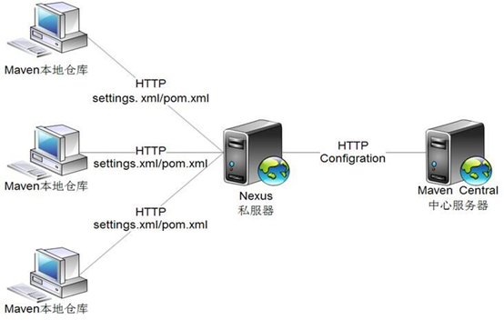
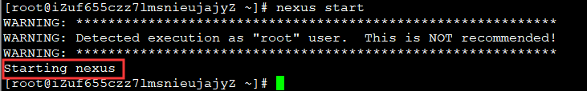
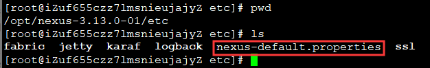

为什么要搭建Maven私服
我们知道Maven仓库分为本地仓库和远程仓库，那么远程仓库又可以分为中央仓库、私服、其他远程仓库。在远程仓库中，默认的是中央仓库，中央仓库是Maven核心自带的远程仓库。
当Maven根据pom中指定坐标寻找构件时，它首先会查看本地仓库。
- 如果本地仓库存在此构件，则直接使用；
- 如果本地仓库不存在此构件，Maven会去远程仓库查找，在发现需要的构件之后，下载到本地仓库再使用。
那么既然有了中央仓库，为什么还要搭建私服呢？
- 如果没有私服，我们所需的所有构件都需要通过maven的中央仓库和第三方的Maven仓库下载到本地，而一个团队中的所有人都重复的从maven仓库下载构件，那么无疑加大了仓库的负载和浪费了外网带宽，如果网速慢的话，还会影响项目的整体进程。
- 我们知道，很多情况下，项目的开发都是在内网进行的。如果没有私服，项目连接不到maven远程仓库怎么办？开发的公共构件怎么让其它的项目使用？
所以为了节省带宽和时间以及让公共构件能够在多个项目上使用，需要在局域网内架设一个私有的仓库服务器，用其代理所有外部的远程仓库。

从上图我们得知，nexus是Maven私服的一种，也是常用的Maven私服，nexus目前被超过10万个开发团队所使用。
下面我们就开始搭建一个Nexus私服。
安装jdk
Nexus 需要 jdk环境。在安装前需要确认你的 centos 机器上是否已经安装了 jdk ， 如果没有安装，则可以执行以下命令安装：
1 | yum install java |
安装完成后，可以使用如下命令查看 jdk 的版本号
1 | java -version |
下载Nexus
可以到Nexus官网去下载，或直接输入如下命令：
1 | wget https://sonatype-download.global.ssl.fastly.net/nexus/3/nexus-3.16.1-02-unix.tar.gz |
但由于网络问题，一般下载的比较慢。当时我也是遇到了这种问题，后来通过其它渠道下载到了nexus安装包，并放到了网盘上，供大家下载。
1 | 链接: https://pan.baidu.com/s/1KpQGcFkESiey1ouOAHP3OA |
nexus安装包下载好之后，解压到指定位置，比如解压到/opt目录下：
1 | tar zxvf nexus-3.16.1-02-unix.tar.gz -C /opt |
配置nexus环境变量
打开/etc/profile文件，在文件末尾添加nexus环境变量，内容如下：
1 | maven nexus |
保存退出，重新加载配置文件，让配置生效：
1 | source /etc/profile |
启动Nexus
由于刚才配置了nexus环境变量，所以此时可以在任意目录下，输入以下命令来启动nexus：
1 | nexus start |
启动之后的效果如下：

此时nexus服务就启动了，nexus的默认端口是8081。此时我们可以在浏览器中访问一下：
1 | http://你的服务器IP:8081 |
如果你使用的是阿里云，那么你需要在阿里云安全组中配置开启8081端口，否则在浏览器中会访问失败。
如果你配置开启8081端口后，仍然启动nexus服务失败，则有可能你的8081端口被其它进程占用了。此时你可以使用以下命令来查看当前哪些端口被占用：
1 | netstat -tulnp ## 查看系统端口占用情况 |
netstat命令各个参数说明如下：
-t : 指明显示TCP端口
-u : 指明显示UDP端口
-l : 仅显示监听套接字(所谓套接字就是使应用程序能够读写与收发通讯协议(protocol)与资料的程序)
-n : 不进行DNS轮询，显示IP(可以加速操作)
-p : 显示进程标识符和程序名称，每一个套接字/端口都属于一个程序
如果发现8081端口已被占用，则需要重新为 nexus 指定端口。端口的配置文件是 nexus-default.properties ，在nexus目录下的 etc 目录，如下所示：

打开nexus-default.properties文件，修改如下内容：
1 | application-port=未被占用的端口 |
重启Nexus服务：
1 | nexus restart |
至此，nexus端口的修改就完成了。
设置Nexus服务开机自启
1 | $ ln -s /opt/nexus-3.16.1-02/bin/nexus /etc/init.d/nexus3 |
Nexus常用命令
启动Nexus
1 | nexus start |
停止Nexus
1 | nexus stop |
重启Nexus
1 | nexus restart |
查看Nexus状态
1 | nexus status |
最后分享下我遇到的一个坑：Nexus服务在刚开始启动时，比较耗CPU，一个双核4G的阿里云服务器，在刚启动Nexus服务时，CPU最高飙升到85%，持续10秒左右在50%以上，大概1分钟之后，CPU恢复正常，在1%左右的水平，内存占用在1.2G左右。